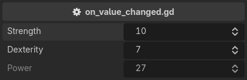
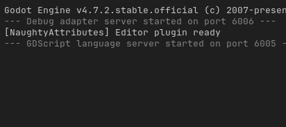

on_value_changed
Detects a value change and executes a callback. The callback takes the old and the new value:
@tool # required for method calls in attributes
extends Node3D
@export_custom(PROPERTY_HINT_NONE, "on_value_changed:print_value_change")
var strength: int = 10
@export_custom(PROPERTY_HINT_NONE, "on_value_changed:print_value_change")
var dexterity: int = 7
@export_custom(PROPERTY_HINT_NONE, "read_only")
var power: int:
get:
return strength * 2 + dexterity
func print_value_change(old_value, new_value):
print(old_value, " -> ", new_value)


The argument is a method name, without parentheses. Exactly one signature is accepted,
(old_value, new_value), and a property can carry more than one callback – they are called in written order.
Note
The callback is a method call, so the script needs @tool. See Writing Attributes.
Note
Keep in mind that the event fires only when the value is changed from the inspector. Undo and redo restore values silently, and so does a clamp applied when the inspector is first built.
Note
Callbacks run after Godot has committed its own undo action, so they see the new value, and a property a callback writes lands on screen at once.